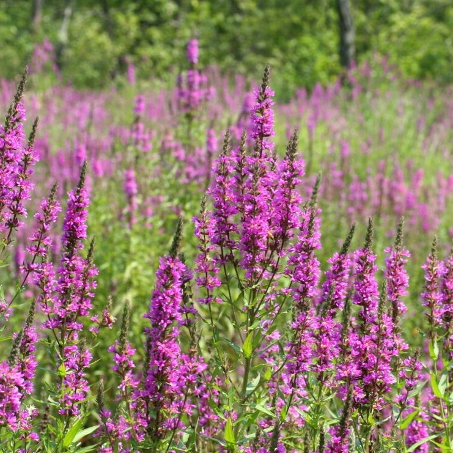

Purple Loosestrife
About
 Purple Loosestrife (lythrum salicaria) is a perennial herb native to Europe, Asia, and Northwest Africa. It blooms July through September, in the hottest months of the year, and produces millions of seeds annually. It thrives in Ohio's wetlands, marshes, and riverbandks, prefering a wet and hot environment. It was introduced in the 19th century as a medicinal herb, and due to its extreme amount of seeds, quickly escaped cultivation and became widespread in the Ohio River runoff area.
Because Purple Loosestrife produces so many seeds, it spreads extremely quickly. Its seeds are picked up by the wind, water, and pollinators and carried near and far. It also can spread through its roots, meaning large colonies of it may appear over time. Because of its aggressive growth, it can easily overpower local wetland species, causing a large decrease in biodiversity and habitat degradation by dominating nutrients. In addition, since it grows in areas of heavy runoff, its roots can disrupt the natural flow of water and quickly dry out an area.
Identification
Purple Loosestrife is characterized by its tall, quare stems and spiky purple flowers. these flowers bloom all summer, and appear similar to a common lavender. They have hundreds of seeds budding at a time, and bloom in large colonies in wetter environements. It has many small star shapped metals and smooth edged leaves.